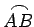
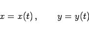
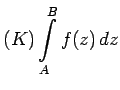
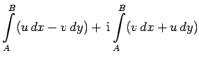
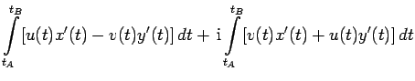
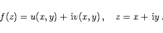
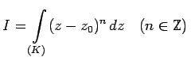

Inhalt Index DeskTop Bronstein

 Funktionentheorie Integration im Komplexen Bestimmtes und unbestimmtes Integral Eigenschaften und Berechnung komplexer Integrale
Funktionentheorie Integration im Komplexen Bestimmtes und unbestimmtes Integral Eigenschaften und Berechnung komplexer Integrale


Sind der Integrationsweg  (oder die Kurve K) in der Form
|  | (14.37) |
und die t-Werte für den Anfangs- und den Endpunkt als tA und tB gegeben, dann kann das komplexe bestimmte Integral über zwei reelle Kurvenintegrale berechnet werden. Dazu wird der Integrand in Real- und Imaginärteil aufgespaltet, und man erhält:
|  | = |  | |
| = |  | (14.38a) |
mit
|  | (14.38b) |
| Beispiel |
|
. |